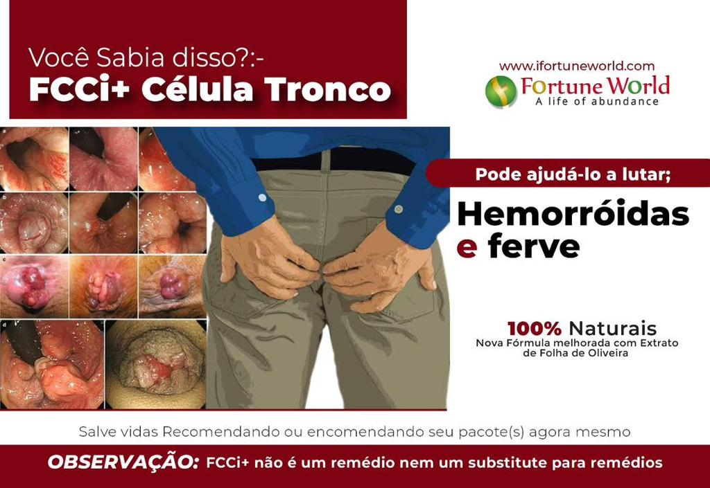
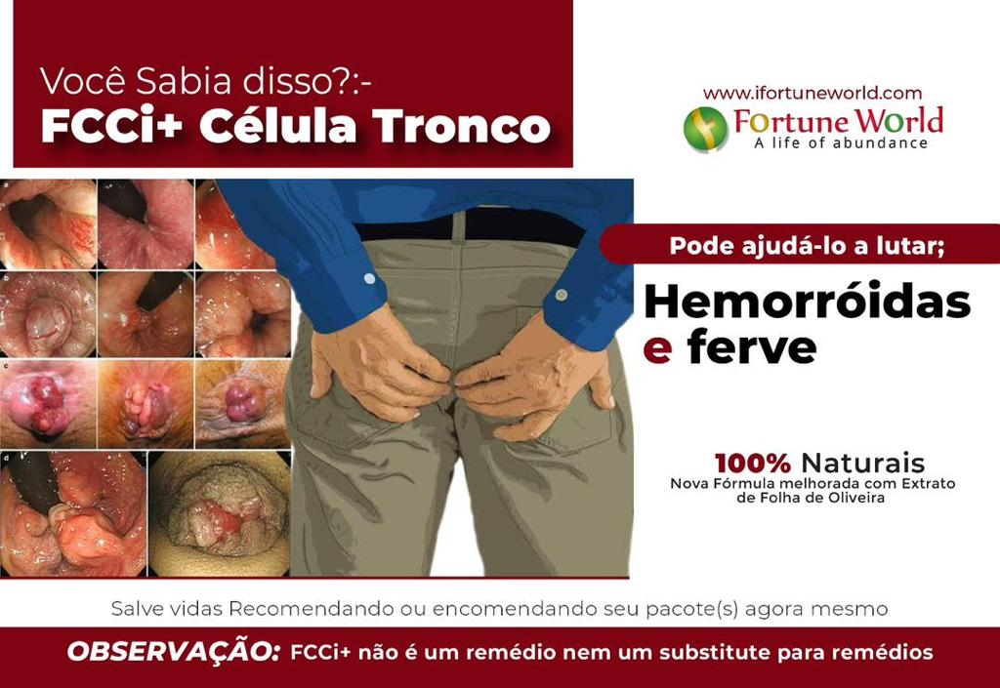
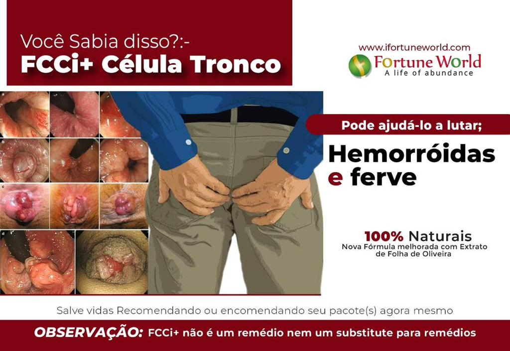

Algumas Doenças Curáveis com FCCi
 

O ORIGINAL DAS CÉLULAS-TRONCO
Suplemento natural que regenera as células do corpo, rejuvenescendo os órgãos e combatendo doenças.
Para MELHORAR A SAÚDE: 1 sachê por dia
Para cura: 1 de manhã e 1 à noite
Condições graves: 2 de manhã e 2 à noite
✅ Tome o pó sob a lÃngua e beba pelo menos 2 litros de água por dia.
